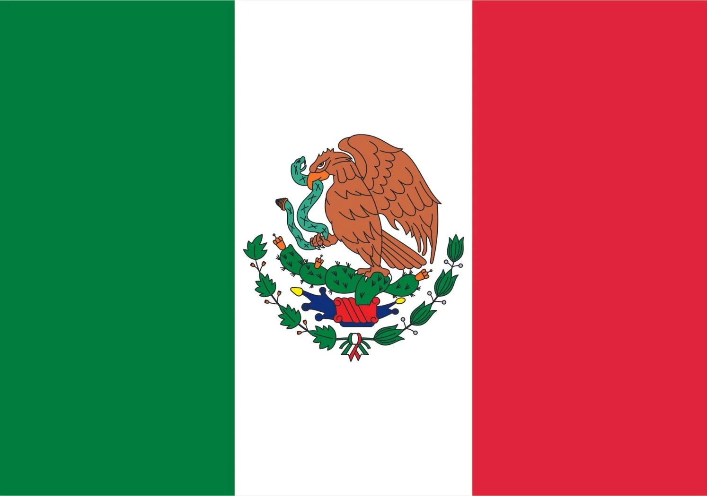
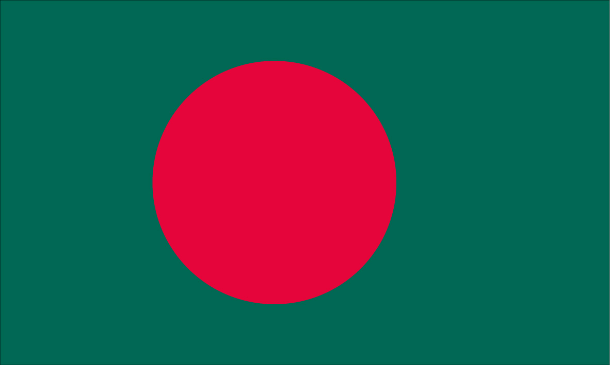

Exercícios
de
A população da Terra refere-se ao número total de pessoas que vivem em nosso planeta. Ela tem crescido ao longo da história, especialmente desde a Revolução Industrial no século XIX. Atualmente, em 2023, já somos cerca de 8,04 bilhões de pessoas. Esse aumento populacional traz desafios relacionados a recursos naturais, educação e saúde. É um tema crucial para entender a dinâmica global.
Para compreender a situação atual da população brasileira, é importante, primeiramente, começar com a compreensão de conceitos básicos neste campo de estudo. Tais como a população de um país, a densidade demográfica de outro, as formas e teorias de crescimento populacional, entre outros exemplos.
Uma população é um grupo de indivíduos que vive em uma determinada localidade que, na demografia, pode ser desde uma rua ou um bairro até países, continentes e o planeta Terra como um todo. Classifica-se a população em população absoluta e população relativa.
É o número total de pessoas que habitam um determinado local, seja de um país, estado, cidade ou região.
É o número de pessoas que habitam um lugar por unidade de medida de área. Por exemplo: a população de uma região é de 12 hab/km², o que significa que, em média, existem doze habitantes para cada quilômetro quadrado dentro da referida região. Também é chamada de densidade demográfica.
Áreas superpovoadas, também conhecidas como áreas densamente povoadas, são regiões ou áreas geográficas onde a densidade populacional é excepcionalmente alta em relação à média global ou à média de outras regiões. Essas áreas são caracterizadas pela presença de uma grande quantidade de pessoas em relação à área geográfica que ocupam.
A densidade populacional é geralmente calculada dividindo o número de habitantes de uma área pelo tamanho total dessa área em quilômetros quadrados. Quando o resultado desse cálculo é significativamente alto, estamos lidando com uma área superpovoada. É valido ressaltar, que, o conceito de superpovoamento é relativo, como podemos ver nos exemplos dados a seguir.
⠀Países como a Holanda, a Bélgica e o Japão, apesar de serem densamente povoados (mais de 300 hab/km2), não são consideradas superpovoadas devido ao seu alto nível de desenvolvimento. Esses países têm economias fortes, infraestrutura avançada, sistemas de saúde e educação eficazes, além de uma alta qualidade de vida para a maioria de seus cidadãos. Eles conseguem lidar com a alta densidade populacional de forma eficiente e sustentável.
Áreas de povoamento escasso são regiões onde a densidade populacional é muito baixa em relação à área geográfica, ou seja, há poucas pessoas vivendo em uma grande extensão de terra. Essas áreas são geralmente caracterizadas por uma baixa concentração de habitações humanas e uma grande quantidade de espaço natural ou desabitado. O povoamento escasso pode ocorrer em várias partes do mundo, incluindo áreas remotas, desertos, regiões montanhosas e zonas rurais pouco habitadas. Em tais áreas, a disponibilidade de recursos naturais, a infraestrutura e os serviços públicos podem ser limitados devido à baixa densidade populacional.
Vários países, incluindo Austrália, Canadá, Rússia, Mongólia, Namíbia e partes do Brasil, apresentam áreas de povoamento escasso, caracterizadas por baixa densidade populacional, vastas paisagens naturais e, muitas vezes, condições geográficas desafiadoras. Nessas regiões, a presença humana é limitada, com a maioria da população concentrada nas áreas urbanas e costeiras, enquanto o interior permanece pouco habitado devido a vastos desertos, estepes, florestas ou climas extremos.
Taxa de fecundidade
É uma média que indica o número de filhos por mulher em idade de ser mãe (entre 15 e 49 anos).
Taxa de natalidade
É o número de nascidos vivos em uma determinada localidade ao longo de um ano.
Taxa de mortalidade
É o número de óbitos anuais em uma determinada localidade em relação à população absoluta.
Crescimento natural ou vegetativo
É o crescimento populacional de uma localidade medido a partir da diminuição da taxa de natalidade pela taxa de mortalidade.
Saldo migratório
É a diferença entre os migrantes e o número de imigrantes.
Crescimento absoluto
É o crescimento total da população, resultante da soma entre crescimento vegetativo e o saldo migratório.
Migrações externas: são as migrações realizadas pela população de diferentes países.
Migrações internas: são as migrações realizadas entre as regiões ou unidades federativas de um dado território.
Êxodo rural: migração em massa da população do campo para as cidades durante um determinado período. Lembre-se que uma migração esporádica de campo para a cidade não é êxodo rural.
Êxodo urbano: migração em massa da população das cidades para o meio rural.
Migração pendular: migração diária e/ou rotineira realizada pela população envolvendo, geralmente, pequenas e médias distâncias. Exemplo: ir e voltar da escola.
Migração sazonal: migrações temporárias durante um ano ou período ligeiramente menor, mas que também é temporária. Exemplo: viagem de férias.
Migração definitiva: quando se trata de algum tipo de migração ou mudança de moradia definitiva.
Metropolização: migração em massa da população do campo e de pequenas e médias cidades para as metrópoles de um dado país.
Desmetropolização: desconcentração da população de um país das metrópoles para as pequenas e médias cidades, é o processo contrário.
Entender quais são os países mais densamente populosos do mundo não se restringe apenas a uma mera curiosidade; é uma forma de obter perspectivas valiosas sobre a paisagem global. Com base em um estudo realizado pela ONU em 2023, aqui está a lista dos dez países com as maiores populações do mundo:
| Posição | Imagem | País | População |
|---|---|---|---|
| 1º | India | 1,428 bilhão | |
| 2º |  |
China | 1,425 bilhão |
| 3º | Estados Unidos | 334,6 milhões | |
| 4º | Indonésia | 281,6 milhões | |
| 5º |  |
Paquistão | 232,9 milhões |
| 6º | Nigéria | 220,5 milhões | |
| 7º | Brasil | 216,4 milhões | |
| 8º | Bangladesh | 169,3 milhões | |
| 9º |  |
Russia | 146,1 milhões |
| 10º |  |
México | 132,7 milhões |
Populoso é a classificação dada ao lugar onde há um número elevado de população absoluta, ou seja, um número elevado de habitantes.
A India tem uma população total de 1 428 013 762 habitantes e é o país mais populoso do mundo. O país menos populoso é o Vaticano, com uma população de aproximadamente 1000 pessoas.
O termo povoado está relacionado ao o conceito que representa a distribuição da população em um determinado lugar com relação ao número de habitantes (população absoluta) e à área em quilômetros quadrados. Na Demografia, essa relação entre o total de habitantes e a área de um determinado lugar corresponde ao conceito de densidade demográfica.
Portanto, um local ou país classificado como povoado possui uma distribuição eficaz da população por sua extensão territorial ou um alto número de habitantes em uma área relativamente pequena. Por outro lado, quando um local é classificado como pouco povoado, indica que sua população está distribuída de forma menos eficiente em seu território ou que possui um número reduzido de residentes em comparação com sua área.
Pra fazer esse cálculo, pega-se a população total da nação e a divide pela área. Esse cálculo também serve pra calcular um conceito muito importante e bastante cobrado no vestibular, que é o de densidade demográfica.
Os países mais "povoados" se referem àqueles com uma alta densidade populacional, ou seja, muitas pessoas vivendo em uma área relativamente pequena. Alguns dos países mais povoados do mundo incluem:
| Posição | Imagem | País | População | Densidade |
|---|---|---|---|---|
| 1º | Mônaco | 38,682 | 25,000 hab/km² | |
| 2º |  |
Singapura | 5,850,342 | 7,987 hab/km² |
| 3º | Bahrein | 1,543,300 | 2,100 hab/km² | |
| 4º | Maldivas | 521,000 | 1,288 hab/km² | |
| 5º |  |
Bangladesh | 166,303,498 | 1,265 hab/km² |
Esses países têm uma alta concentração de pessoas em relação ao seu tamanho geográfico, o que os torna densamente povoados. É importante notar que densidade populacional não se traduz diretamente em tamanho absoluto da população, como é o caso dos países mais "populosos".